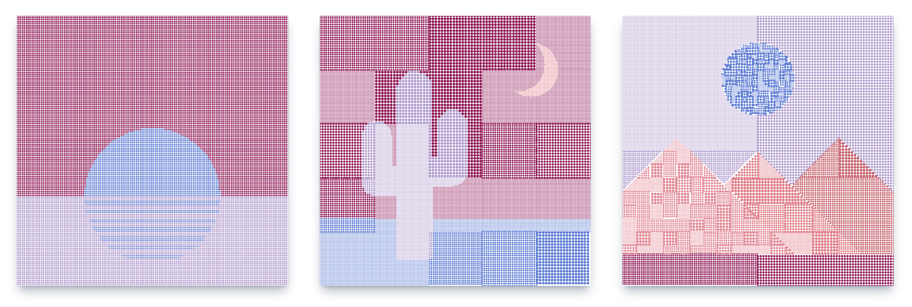
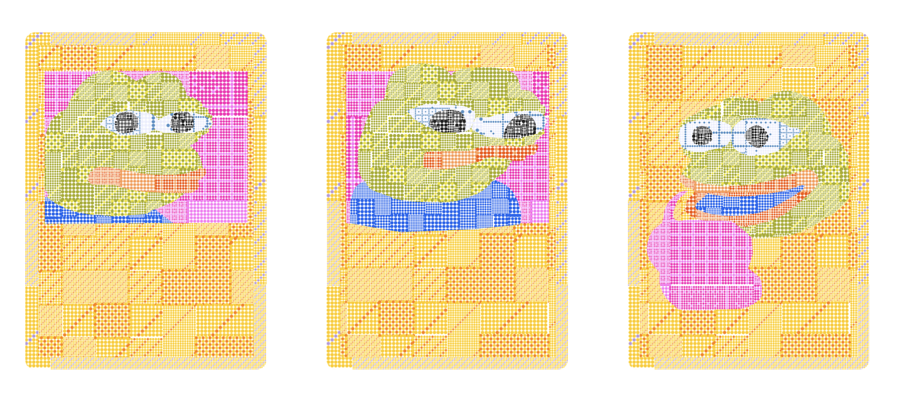

prints
if you're a collector of my digital art and interested in having a fine art print made of your piece, you're in the right place :)
please note that if you want a print of a work of mine that you own for your own display purposes as a collector, you always can get it printed yourself with a local print shop without needing my permission to do so based on the CC BY-NC license that I use for my work
that said, if you would like to purchase prints from me directly, I am currently offering two print varieties: limited edition prints of tokens from my Art Blocks releases, and open edition composite prints of my stippled Pepe cards
limited edition prints
for collectors of one of my generative art projects released via Art Blocks, I offer limited edition hand signed archival quality prints in two (large) sizes:
these prints are limited in edition to token holders, but not limited in total edition size — if you sell your digital token, a future owner may purchase their own signed print from me of the same token ID #
please note that in the process of purchasing one of these signed prints, I will ask that you prove token ownership by sending me a signed message with your token ID, using Etherscan's verified signatures app
to start an order please send an email to jake@stipplestudio.art with: your name, mailing address, email, the token ID(s) you would like printed, the size(s) you would like, and whether you prefer to pay in DAI or ETH.

open edition prints
for collectors interested in my stippled Pepe cards issued on Counterparty, I currently have multiple open edition prints available of various composites of sets of cards that I have curated.
you can view the full set of available composite prints here, where they are available for order both with and without framing.